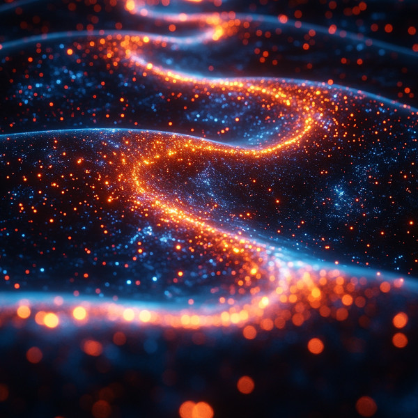
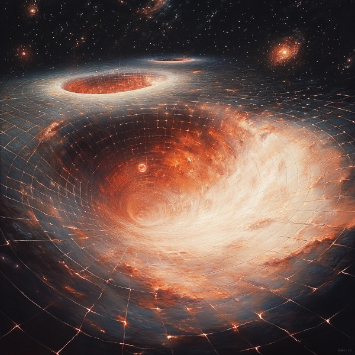
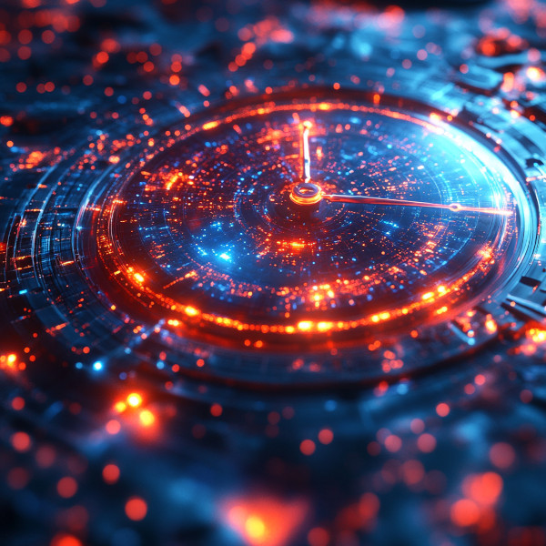

Introduction to Quantum Loop Gravity (QLG)
In the quest to understand the universe’s most fundamental forces, Quantum Loop Gravity (QLG) emerges as a compelling theory that seeks to bridge the gap between quantum mechanics and general relativity. While Einstein’s theory of general relativity describes gravity as the curvature of spacetime, quantum mechanics governs the subatomic world. QLG attempts to unify these concepts by proposing a discrete structure of spacetime, fundamentally altering our understanding of the universe’s fabric.
The Basics of QLG

Figure 1: AI Artist conception of Quantum Loop Gravity
Quantum Loop Gravity proposes that spacetime is not a smooth continuum but rather consists of tiny, discrete loops. These loops are incredibly small, on the order of the Planck length, approximately 10-35 meters. In Quantum Loop Gravity, these loops form a complex, interconnected structure known as a spin network. Spin networks provide a quantum state of the gravitational field, representing the geometry of space at the smallest scales. As these spin networks evolve, they form a “spin foam,” which describes the quantum evolution of spacetime. This dynamic interplay between spin networks and spin foam suggests that spacetime itself is quantized, with space and time emerging from more fundamental quantum processes.
Spacetime Quantization

Figure 2: AI Artist conception of Spacetime Quantitization
In this theory, the traditional idea of spacetime as a continuous entity is replaced with the notion of quantization. Just as light is quantized into photons, spacetime itself is thought to be quantized into finite loops. This discrete nature prevents matter super-imposing upon itself. Like “singularities”, such as those proposed to be found in black holes or the Big Bang, by imposing a minimum possible length scale.
Implications for Gravity and Time

Figure 3: AI Artist conception of Gravity Fields
One of the most intriguing implications of QLG is its potential to explain gravity in a quantum framework. Unlike general relativity, which treats gravity as a geometric property of curved spacetime, QLG posits that gravity arises from the interactions of these fundamental loops. This perspective offers a new way to understand gravitational phenomena, particularly in extreme conditions where classical theories break down.
Time Dilation Zones and Beyond

Figure 4: Time Dilation and Beyond
In the world of the Age of Chronos, QLG is not just a theoretical framework but a practical tool. The technology derived from QLG allows the creation of time dilation zones without relying on relative velocity. Centuries after the initial discovery, this technology has advanced to the point where entire star systems can be enveloped in these zones, dramatically altering the passage of time within them. This has profound implications for space travel, resource management, and even societal development, as civilizations can manipulate time to suit their needs.
The Ongoing Journey

Figure 5: Ongoing Journey
Quantum Loop Gravity is still a developing field, with researchers continuously refining its models and exploring its implications. In the Age of Chronos, however, it serves as a cornerstone of technological advancement, enabling feats once thought impossible and reshaping our understanding of the cosmos.